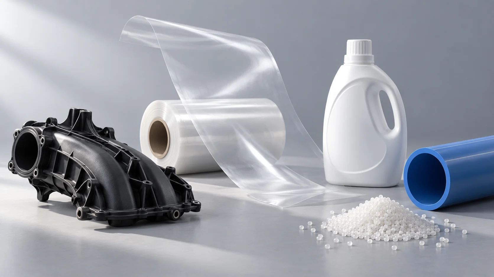

Understand the application.
Start with what you make, how you process it and what the part must do.
A practical connection between raw materials and the products you make.

CycleVance supplies plastic raw materials for industrial applications. Our portfolio brings together Thai polyolefins and styrenics with engineering resins including PA6, PA66, PC and PC/ABS.
We offer virgin and off-grade options within our established material portfolio, with grade-specific discussions around performance, consistency and value.
Start with what you make, how you process it and what the part must do.
Align the grade, documentation, packaging and quantity before the order.
Work toward practical supply arrangements and lasting partnerships.
Start with your application. We’ll help define the material conversation.
Talk to CycleVance